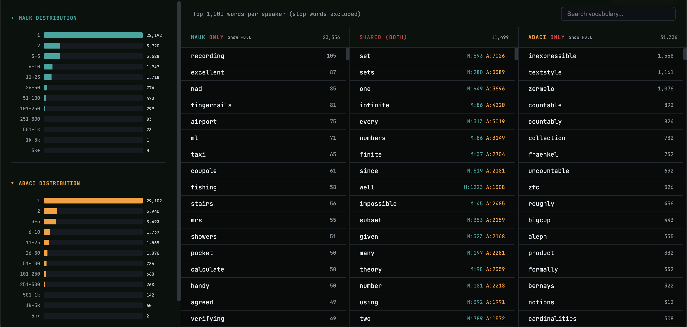

Linguistic visualization
Vat Lexicon
A MapReduce/p5.js visualization for exploring vocabulary, distribution, similarity, and morphological patterns in a synthetic social world.
What it does
Vat Lexicon turns a data-processing pipeline into an explorable visual surface. It traces inputs through a MapReduce-style process, then surfaces word frequency, Jaccard similarity, and morphological “nonce” patterns.
Why this page is not an iframe
The full visualizer is intentionally opened in its own responsive context. Embedding its wide interactive canvas inside the portfolio created cropping and navigation problems; this page provides the project framing and a stable launch point instead.
Data boundary
The public explanation focuses on the simulation and visualization method. It does not turn private logs or personal data into a portfolio artifact.

